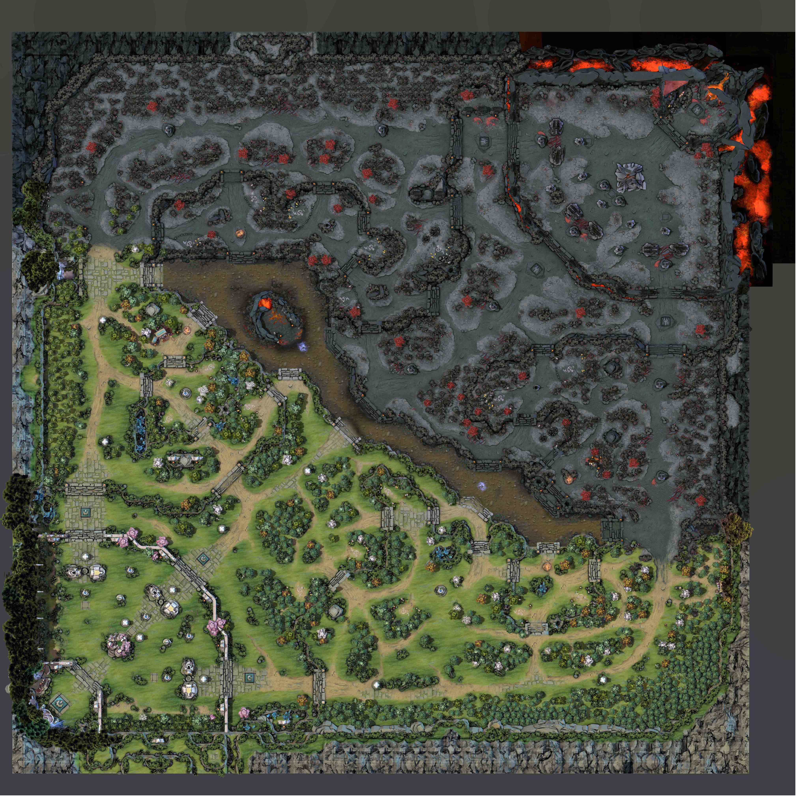

There are 3 lanes in which players can go to. The midlane where a core hero is placed, the offlane where usually 2 players go( one core and one support) for both teams, and finally the safelane; which despite the name is not very safe and is often the second hardest lane to play with the hardest being the midlane. The safelane almost always has atleast 1 support and 1 core.